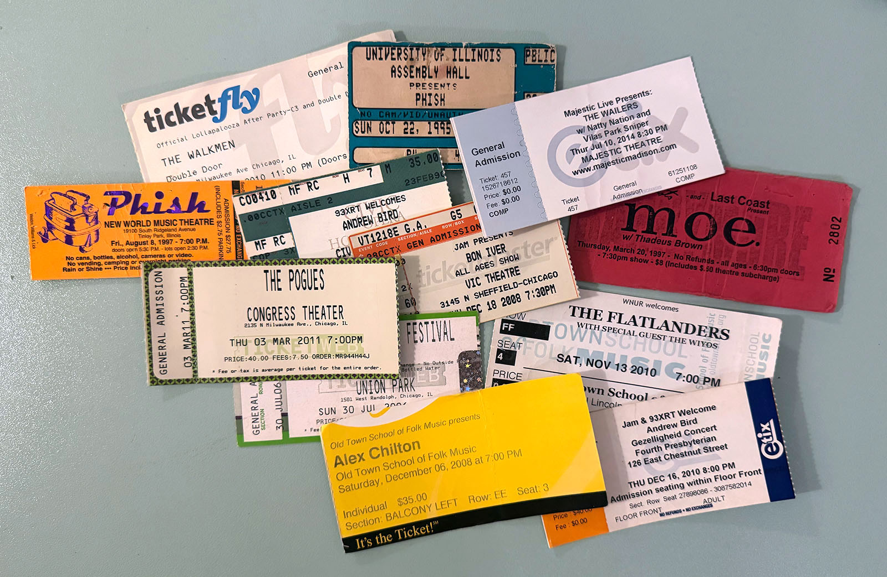
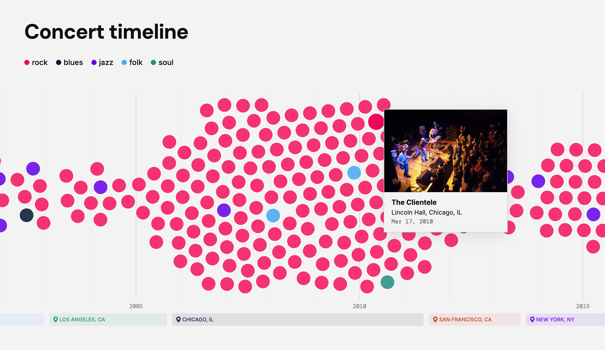
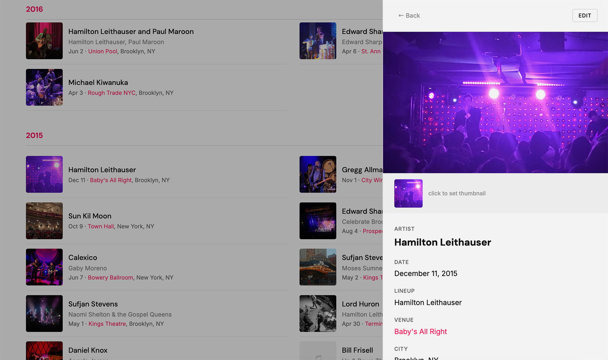

Concert Timeline
Over the past thirty years I've kept track of every concert I've been to, pieced together from memory, ticket stubs, and photos taken from the crowd. It comes out to nearly 300 gigs across more than 130 venues, from Melbourne to New York.

Random assortment of my ticket stubs...
The timeline turns that scattered record into something you can actually see. Each show appears as a single point in time, mapped by year.

The final result is a 'beeswarm' graph.
Earlier versions took different forms. There was a straight chronological list, then a map of the world. Both were technically correct, but neither really revealed anything. The beeswarm began to shift that, bringing out clusters of activity, repeat venues, and the shape of certain years.

The admin for adding or editing records and images.
It spans eight cities I've lived in, five strands of music, and hundreds of hours spent in dark rooms with other people. Most of the images are my own. It's less about cataloguing everything and more about giving the data some form so the patterns, and the life around them, come into view.
Visit the timeline at edwardblake.net/concerts